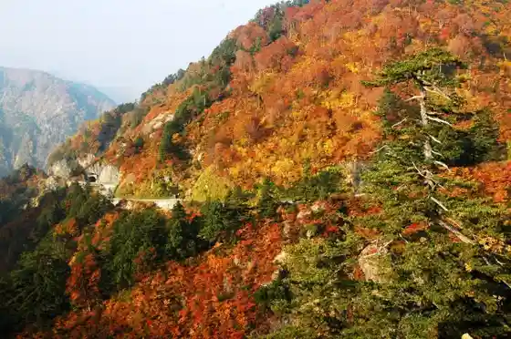
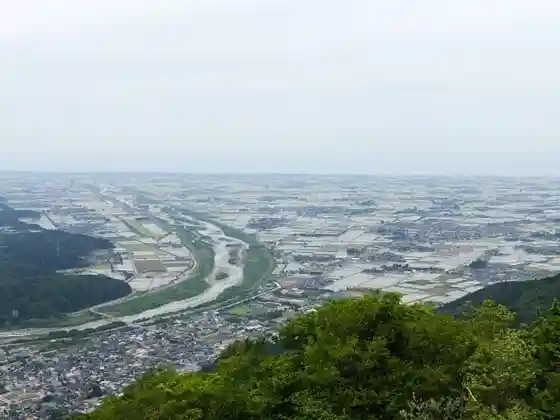
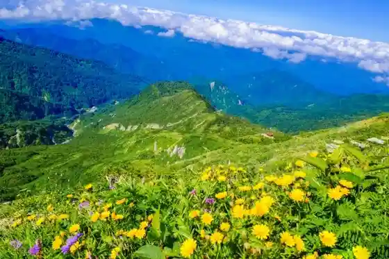
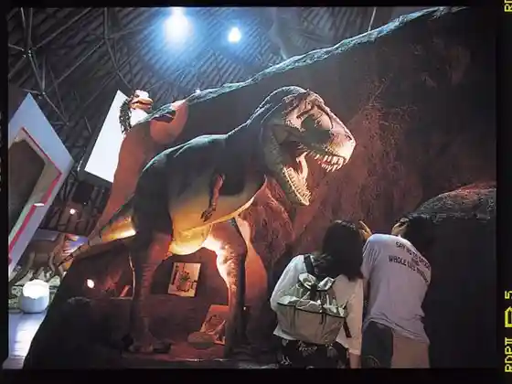

Hakusan Hime Shrine
Hakusan, Ishikawa · 076-272-0680 · Official / source link
Hakusan Shirakawa Sato Howaitorodo
Hakusan, Ishikawa · 076-256-7341 · Official / source link

Sukai Shishiku (Shishiku Highlands)
Hakusan, Ishikawa · 076-273-8449 · Official / source link

Hakusan
Hakusan, Ishikawa · 076-273-1001 · Official / source link

Hakusan Kyoryu Park Shiramine
Hakusan, Ishikawa · 076-259-2724 · Official / source link

Torein Park Hakusan
Hakusan, Ishikawa · 076-235-9677 · Official / source link
Roadside Station Sena / Hakusan Kanko Bussan Center
Hakusan, Ishikawa · 076-256-7172 · Official / source link
Mengataki
Hakusan, Ishikawa · Official / source link
Nanryugababa Campground
Hakusan, Ishikawa · 076-259-2022 · Official / source link
Tedori Gorge
Hakusan, Ishikawa · 076-255-5310 · Official / source link
Hakusan Ichirino Irumineshon (Akari Detsunagu Hakusan) Akari Ni Inori Wo Kome Te
Hakusan, Ishikawa · 076-274-9544 · Official / source link
Ubagataki
Hakusan, Ishikawa · 076-256-7341 · Official / source link
Matto Seaside Park (Tokumitsu Beach)
Hakusan, Ishikawa · 076-275-0521 · Official / source link
Komai Ko Coast Beach
Hakusan, Ishikawa · 090-2833-6493 · Official / source link
Roadside Station Megumi Hakusan
Hakusan, Ishikawa · 076-276-8931 · Official / source link
Shiramine Onsen Soyu
Hakusan, Ishikawa · 076-259-2839 · Official / source link
Kanko no Ie
Hakusan, Ishikawa · 076-259-2441 · Official / source link
Ishikawaken Fureai Konchu Kan
Hakusan, Ishikawa · 076-272-3417 · Official / source link
Iitoko Hakusan Tetsudo Festival
Hakusan, Ishikawa · 076-274-9544 · Official / source link
Dainichi Kawa Damu Mizumi
Hakusan, Ishikawa · 076-254-2120 · Official / source link
Sukai Shishiku Gondorarifutosansetto Eigyo
Hakusan, Ishikawa · 076-273-8449 · Official / source link
Nanryu Sanso Nanryugababagabin
Hakusan, Ishikawa · 076-259-2022 · Official / source link
Kin Tsurugi Miya
Hakusan, Ishikawa · 076-272-0131 · Official / source link
Hakusan Seimoa Ski Area
Hakusan, Ishikawa · 076-273-0331 · Official / source link
Hakusan Torigoe Soba Hatake
Hakusan, Ishikawa · Official / source link
Roadside Station Ikkoikki Village
Hakusan, Ishikawa · 076-254-2888 · Official / source link
Ichigo Farm Hakusan
Hakusan, Ishikawa · 080-8998-5401 · Official / source link
Hakusan Sato
Hakusan, Ishikawa · 076-255-5998 · Official / source link
Fukube no Otaki
Hakusan, Ishikawa · 076-256-7341 · Official / source link
Matto Kaihin Onsen
Hakusan, Ishikawa · 076-274-5520 · Official / source link
Matto Seaside Park
Hakusan, Ishikawa · 076-274-0639 · Official / source link
Tedori Kyanionrodo
Hakusan, Ishikawa · 076-259-5893 · Official / source link
Kikuhime Goshigaisha
Hakusan, Ishikawa · 076-272-1234 · Official / source link
Gaido to Meguru Mikawa Okaeri Festival
Hakusan, Ishikawa · 076-278-4768 · Official / source link
Mikawa Onsen Motoyu Honda
Hakusan, Ishikawa · 076-278-3434 · Official / source link
Hyakuman Kan no Iwa
Hakusan, Ishikawa · 076-274-9579 · Official / source link
Torigoe Castle Ruins
Hakusan, Ishikawa · 076-254-8020 · Official / source link
Howaitorodo Katamichi Muryo Kyanpen in Hakusan
Hakusan, Ishikawa · 076-259-5893 · Official / source link
Park Shishiku
Hakusan, Ishikawa · 076-273-8449 · Official / source link
Hakusan Workshop
Hakusan, Ishikawa · 076-259-2859 · Official / source link
Hakusan Ichirino Onsen
Hakusan, Ishikawa · Official / source link
Ichirino Kogen Hotel Roan
Hakusan, Ishikawa · 076-256-7141 · Official / source link
Tedorigawa Kosenjo
Hakusan, Ishikawa · 076-278-7111 · Official / source link
Goju Tani no Dai Sugi
Hakusan, Ishikawa · 076-274-9573 · Official / source link
Hakusan Roku Tema Park Yoshioka Enchi
Hakusan, Ishikawa · 076-272-3637 · Official / source link
Habu Village Hibiki Forest Mintorei no
Hakusan, Ishikawa · 076-256-7660 · Official / source link
Badohamingu Torigoe
Hakusan, Ishikawa · 076-254-2146 · Official / source link
Shiramine Juyo Dentoteki Kenzobutsu Gun Hozon Chiku
Hakusan, Ishikawa · 076-259-2721 · Official / source link
Senjo Onsen Seiryu
Hakusan, Ishikawa · 076-273-3483 · Official / source link
Nishiyama Ryokan
Hakusan, Ishikawa · 076-256-7219 · Official / source link
Yoshino Oto Campground
Hakusan, Ishikawa · 076-255-5353 · Official / source link
Hakusan National Park / Hakusan Tozan
Hakusan, Ishikawa · 076-273-4851 · Official / source link
Hakusan Roku Shonen Nature no Ie
Hakusan, Ishikawa · 076-256-7114 · Official / source link
Ichirino Naitogondora Yuhi to Hoshi to Irumineshon
Hakusan, Ishikawa · 076-256-7779 · Official / source link
Oya Tani Baths
Hakusan, Ishikawa · 076-256-7341 · Official / source link
Chugu Onsen Yuyado Kuroyuri
Hakusan, Ishikawa · 076-256-7955 · Official / source link
Iwama no Funsen to Gun
Hakusan, Ishikawa · 076-274-9579 · Official / source link
Hakusan Ichirino Onsen Ski Area
Hakusan, Ishikawa · 076-256-7412 · Official / source link
Kaga Shishi Atama Chi Ta Workshop
Hakusan, Ishikawa · 076-272-1696 · Official / source link
Yoshino Kogei Village
Hakusan, Ishikawa · 076-255-5319 · Official / source link
Kaga Shishi Atama Chi Ta Workshop (Nezuke Etsuke Ke Experience)
Hakusan, Ishikawa · 076-272-1696 · Official / source link
Hyaku Shi Take Taki
Hakusan, Ishikawa · Official / source link
Ishikawaken Norin Sogokenkyu Center Ringyo Shikenjo (Jumoku Park)
Hakusan, Ishikawa · 076-272-0673 · Official / source link
Tedori Park
Hakusan, Ishikawa · 076-278-6250 · Official / source link
(Issha) Hakusan Kanko Renmei
Hakusan, Ishikawa · 076-259-5893 · Official / source link
Torigoe Ikkoikki Rekishikan
Hakusan, Ishikawa · 076-254-8020 · Official / source link
Mikawa Shishu Village
Hakusan, Ishikawa · 076-278-6622 · Official / source link
Hakusan Kei Sugoroku 1 Nichi Kosu (Takushii De Meguru Kanazawa Hakusan)
Hakusan, Ishikawa · 076-259-5893 · Official / source link
Ikkan Tera
Hakusan, Ishikawa · 076-272-0453 · Official / source link
Ichirino Kogen Hotel Roan no Guranpingu
Hakusan, Ishikawa · 076-256-7141 · Official / source link
Saikurusuteshon Hakusan Shita
Hakusan, Ishikawa · Official / source link
Yorimichi Pakingu (Tedori Gorge (Komon Hashi))
Hakusan, Ishikawa · 076-274-9564 · Official / source link
Ichirino Park
Hakusan, Ishikawa · 076-256-7412 · Official / source link
Hakusan Roku Folk Museum
Hakusan, Ishikawa · 076-259-2665 · Official / source link
Matto Sogo Sports Park
Hakusan, Ishikawa · 076-276-4844 · Official / source link
Daimon Onsen Center
Hakusan, Ishikawa · 076-255-5833 · Official / source link
Mikata Iwadake
Hakusan, Ishikawa · 076-256-7341 · Official / source link
Hakusan Fumoto Furusato Gaido (Kaga Hakusan Yogozatta)
Hakusan, Ishikawa · Official / source link
Shiramine Tokusanhin Hambai Shisetsu Na Sai
Hakusan, Ishikawa · 076-259-2588 · Official / source link
Iwama Sanso
Hakusan, Ishikawa · 076-256-7933 · Official / source link
Hayashi Nishi Tera
Hakusan, Ishikawa · 076-259-2041 · Official / source link
Kaga Zenjo Michi
Hakusan, Ishikawa · 076-273-1001 · Official / source link
Oniyuri Gunsei Chi
Hakusan, Ishikawa · 076-274-9544 · Official / source link
Hakusan Ritsu Museum
Hakusan, Ishikawa · 076-275-8922 · Official / source link
Yuyado Kuroyuri
Hakusan, Ishikawa · 076-256-7955 · Official / source link
Sabo Shindo no Enmei Mizu
Hakusan, Ishikawa · Official / source link
Meoto Iwa Onsen Rakuyo
Hakusan, Ishikawa · 076-272-4126 · Official / source link
Ippuku Tokoro Ohagi Ya
Hakusan, Ishikawa · 076-272-5510 · Official / source link
Senjo Onsen Seiryu Campground
Hakusan, Ishikawa · 076-273-3483 · Official / source link
Tedorigawa Dam
Hakusan, Ishikawa · Official / source link
Hakusan Kozan Botanical Garden
Hakusan, Ishikawa · 076-273-0017 · Official / source link
Iyashi Baths Tenryo
Hakusan, Ishikawa · 076-256-7846 · Official / source link
Ushi Kubi Tsumugi
Hakusan, Ishikawa · 076-259-2859 · Official / source link
Gyozen Tera
Hakusan, Ishikawa · 076-275-2240 · Official / source link
Matto Green Park
Hakusan, Ishikawa · 076-274-9560 · Official / source link
Hakusan Tedorigawa Jiosaikuringu
Hakusan, Ishikawa · 076-259-5893 · Official / source link
Hakusan Matto Gakushu Center
Hakusan, Ishikawa · 076-274-5411 · Official / source link
Juhachi Kawara Park
Hakusan, Ishikawa · 076-272-1112 · Official / source link
Nogyo Taiken Shisetsu Niwaka Workshop
Hakusan, Ishikawa · 076-255-5930 · Official / source link
Hakko Bunka 1 Nichi Kosu (Takushii De Meguru Kanazawa Hakusan)
Hakusan, Ishikawa · 076-259-5893 · Official / source link
Hakusan Kanko Boranteiagaido Uerukamu Hakusan
Hakusan, Ishikawa · 090-3924-7165 · Official / source link
Senjo Onsen Seiryu
Hakusan, Ishikawa · 076-273-3483 · Official / source link
Machi Aruki Jiogaido Tour Matto Hen
Hakusan, Ishikawa · 076-259-5893 · Official / source link
Naka Village Ryu Seimitsu Kogyo (Kabu)
Hakusan, Ishikawa · 076-273-1111 · Official / source link
Hijiri Kyo Tera
Hakusan, Ishikawa · 076-275-0161 · Official / source link
Wakamiya Hachiman Shrine
Hakusan, Ishikawa · 076-275-0513 · Official / source link
Fudo Taki (Hakusan)
Hakusan, Ishikawa · 076-273-1001 · Official / source link
Gannen Tera (Hakusan Matto Chiku)
Hakusan, Ishikawa · 076-275-0259 · Official / source link
Ota no Dai Tochi no Ki
Hakusan, Ishikawa · 076-259-2721 · Official / source link
Ushi Kubi Tsumugi ×MIZEN Hakusan Mise (Kaga no Shoku Za)
Hakusan, Ishikawa · 076-273-5755 · Official / source link
Torigoe Himawari Hatake
Hakusan, Ishikawa · 076-269-8100 · Official / source link
Rekishi Machinami Mi 1 Nichi Kosu (Takushii De Meguru Kanazawa Hakusan)
Hakusan, Ishikawa · 076-259-5893 · Official / source link
Saisentan & Retoro Tetsudo Experience Monita Tour
Hakusan, Ishikawa · 076-231-2126 · Official / source link
Machi Aruki Jiogaido Tour Shiramine Hen
Hakusan, Ishikawa · 076-259-5893 · Official / source link
Tedorigawa Sogo Kaihatsu Memorial Museum
Hakusan, Ishikawa · 076-259-2701 · Official / source link
Hironori Ike
Hakusan, Ishikawa · 076-255-5310 · Official / source link
Hakusan Sugi no Ko Onsen
Hakusan, Ishikawa · 076-255-5926 · Official / source link
Machi Aruki Jiogaido Tour Mikawa Hen
Hakusan, Ishikawa · 076-259-5893 · Official / source link
Kuretake Bunko
Hakusan, Ishikawa · 076-278-6252 · Official / source link
Ishikawa Rutsu Koryu Kan
Hakusan, Ishikawa · 076-278-7111 · Official / source link
Hajimete no Hakusan Tedorigawa Jio Park Tour Setsuzan Hen
Hakusan, Ishikawa · 076-259-5893 · Official / source link
Matto Kin Tsurugi Miya
Hakusan, Ishikawa · 076-275-0578 · Official / source link
Tokutei Hieiri Katsudo Hojin Hakusan Shiramine Shizengaku Ko
Hakusan, Ishikawa · Official / source link
Hakusan no Village Bunka Densho Kan
Hakusan, Ishikawa · 076-254-2953 · Official / source link
Todaiji Ryo Yokoe So Iseki So Ieato
Hakusan, Ishikawa · 076-274-9579 · Official / source link
Apurikotto Park
Hakusan, Ishikawa · 076-278-8131 · Official / source link
Shinchu Miya Onsen Center
Hakusan, Ishikawa · 076-256-7730 · Official / source link
Yoko Town Urara Kan
Hakusan, Ishikawa · 076-272-0001 · Official / source link
(Shishi Komainu Basu Tour) Monita Sankashaboshu
Hakusan, Ishikawa · 076-259-5893 · Official / source link
Bunao Yama Kansatsu Sha
Hakusan, Ishikawa · 076-256-7250 · Official / source link
Higashi Futakuchi Folk History Museum
Hakusan, Ishikawa · 076-274-9579 · Official / source link
Hakusan Honji Do
Hakusan, Ishikawa · 076-259-2041 · Official / source link
Meitatsu Tera
Hakusan, Ishikawa · 076-275-0118 · Official / source link
Matto Furusato Kan
Hakusan, Ishikawa · 076-276-5614 · Official / source link
Mihotoke Tomo Sugi
Hakusan, Ishikawa · 076-274-9579 · Official / source link
Machi Aruki Jiogaido Tour Tsurugi Hen
Hakusan, Ishikawa · 076-259-5893 · Official / source link
Ishino Seisakusho
Hakusan, Ishikawa · 076-277-1851 · Official / source link
Ichirino Manpukurin Matsuri
Hakusan, Ishikawa · 076-256-7444 · Official / source link
Hakusan Kei Sugoroku 2 Nichi Kosu (Takushii De Meguru Kanazawa Hakusan)
Hakusan, Ishikawa · 076-259-5893 · Official / source link
Kawauchi Jibasangyo Center
Hakusan, Ishikawa · 076-273-1190 · Official / source link
(Kabu) Akutorii
Hakusan, Ishikawa · 076-277-3325 · Official / source link
Takematsu Kaigan Hamanasu Gunsei Chi
Hakusan, Ishikawa · 076-274-9579 · Official / source link
Hon Sei Tera
Hakusan, Ishikawa · 076-275-4976 · Official / source link
Funaoka Yama Iseki
Hakusan, Ishikawa · 076-274-9579 · Official / source link
Oarashi Yama no Mizubasho
Hakusan, Ishikawa · 076-259-2721 · Official / source link
Nikyoku Castle Ruins
Hakusan, Ishikawa · Official / source link
(Kabu) Ara Yo
Hakusan, Ishikawa · 076-278-2765 · Official / source link
Tsurugi Betsuin
Hakusan, Ishikawa · 076-272-0144 · Official / source link
Komiya Park no Sakura
Hakusan, Ishikawa · 076-274-9560 · Official / source link
Shironuki Yama
Hakusan, Ishikawa · 076-256-7011 · Official / source link
Chiyojo no Sato Haiku Kan
Hakusan, Ishikawa · 076-276-0819 · Official / source link
Tagawa Ie
Hakusan, Ishikawa · 076-277-1718 · Official / source link
Matto Castle Park
Hakusan, Ishikawa · 076-274-9560 · Official / source link
Masanori Tera
Hakusan, Ishikawa · 076-275-0174 · Official / source link
Shutsu Castle Ruins
Hakusan, Ishikawa · Official / source link
Hakusan Sabo Science Museum
Hakusan, Ishikawa · 076-259-2990 · Official / source link
Nishikawa Tori no Sakura
Hakusan, Ishikawa · 076-274-9544 · Official / source link
Matto Nakagawa Kazumasa Kinen Art Museum
Hakusan, Ishikawa · 076-275-7532 · Official / source link
Yume Workshop Shoku Hitoshi
Hakusan, Ishikawa · 076-272-3966 · Official / source link
Machi no Eki (Shishi no Sato Tsurugi)
Hakusan, Ishikawa · 076-273-2211 · Official / source link
Jodo Tera
Hakusan, Ishikawa · 076-275-0872 · Official / source link
(Kyoju Kamiki Basu Tour) Monita Sankashaboshu
Hakusan, Ishikawa · 076-259-5893 · Official / source link
Tsuki Hashi Castle Ruins
Hakusan, Ishikawa · Official / source link
(Kabu) Sen Fukuya
Hakusan, Ishikawa · 076-275-5931 · Official / source link
HAKUSAN GEO JOURNEY Kyanpen
Hakusan, Ishikawa · 076-234-0123 · Official / source link
Funaoka Yama Castle Ruins
Hakusan, Ishikawa · Official / source link
Orientaruchien Kogyo (Kabu)
Hakusan, Ishikawa · 076-276-1155 · Official / source link
Hakusan Yakusho
Hakusan, Ishikawa · 076-276-1111 · Official / source link